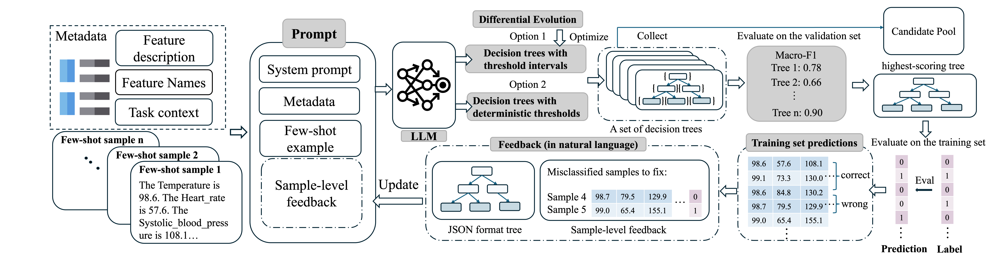

Bio
I received my bachelor’s degree in Statistics and Data Science from UC Santa Barbara in 2025. My research interests are in biomedical LLMs and interpretable machine learning in small-data regimes.
My recent work in biomedical LLMs is about automatic ratings with LLM-as-a-judge, studying the correlation between human expert ratings and LLM ratings. For interpretable machine learning, I am working on transferring the knowledge of LLMs to decision trees with self-optimization, and the manuscript is ready to be submitted.
In the future, I am planning to work on the training and the benchmarking of biomedical LLMs and also on further studying how LLMs can modify the weights of small models by transferring their prior knowledge.
Please see my Research Proposal for more details.
Personal Information
- Bachelor of Science, University of California, Santa Barbara (2022–2025)
- Statistics and Data Science · GPA 3.55/4.0
- English (TOEFL 108) · Chinese (native)
- charles2605722943@outlook.com
- +86 137 1514 3400
Experience
Research Assistant · Shenzhen University of Advanced Technology
Nov 2025 – Present
AI-Powered Medical SOAP Report Generation System (patent pending)
Nov 2025 – Sep 2026
- A production-ready clinical documentation service combining large language models with retrieval-augmented generation for evidence-based medical reporting.
- Built a hybrid inference pipeline with DeepSeek V4 Flash API calls and asynchronous RAG-enhanced reporting for clinical guideline retrieval. A public server receives requests, and a private server handles compute-intensive tasks such as RAG.
- Implemented a scalable job queue with robust task scheduling to ensure reliable report generation at scale.
- The system serves more than 10,000 patients.
Research
Research interests include biomedical LLMs, evaluation of biomedical LLMs, and small-sample machine learning.
SUAT-BMI at MEDIQA-EVAL 2026: An Ensemble Approach to Language Models as Judges for Automatic Rating of Medical Responses (First author)
Proceedings of the 8th Workshop on Clinical Natural Language Processing (Clinical NLP) @ LREC 2026, pp. 12–18, Palma, Mallorca, Spain. ELRA Language Resources Association.
Jan 2026 – Feb 2026
Agentic Infusion of Language Model Knowledge into Interpretable Predictive Models for Data-Scarce Learning (First author)

Jan 2026 – Sep 2026
Guideline-Grounded LLMs for Scalable SOAP Report Generation from Annual Physical Examination Data: A Real-World Hospital Deployment in China
Jan 2026 – Sep 2026
Competition
MEDIQA EVAL-2026 Competition (1st Place)
Jan 2026 – Feb 2026
- Placed first out of 42 teams in the MEDIQA EVAL-2026 competition at the Clinical NLP Workshop, hosted by Microsoft.
- The task was to automatically rate LLM-generated medical responses given patient text and images.
Projects
metafit
An open-source Python package that implements the idea in my paper Agentic Infusion of Language Model Knowledge into Interpretable Predictive Models for Data-Scarce Learning.
VitaLLM
Nov 2025 – Sep 2026
- Developed a training recipe for LLMs for automated SOAP generation, including continued pretraining (CPT), data augmentation, and supervised fine-tuning (SFT).
- Developed an LLM-as-a-judge benchmark for automated evaluation of SOAP generation, with metrics including factual accuracy, consistency, and writing style.